Carved effigies at St Columba’s Isle
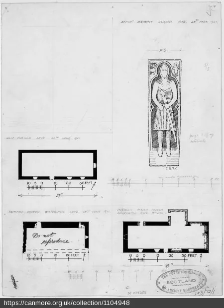
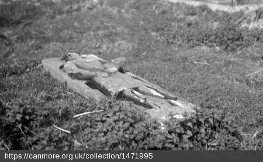
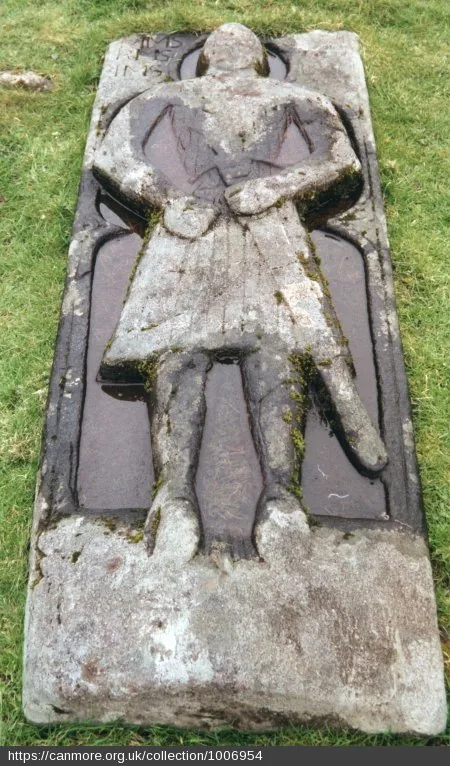
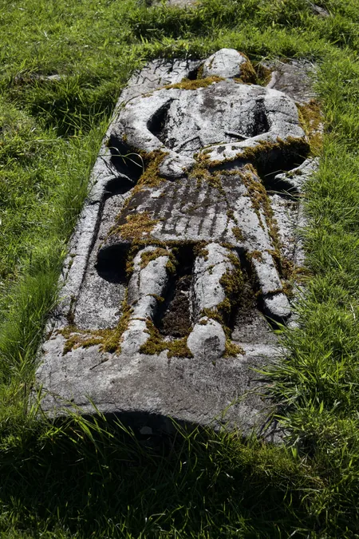
Skeabost · Isle of Skye · Scotland
A historic burial ground and church site in the River Snizort.
Also known as Skeabost Island.
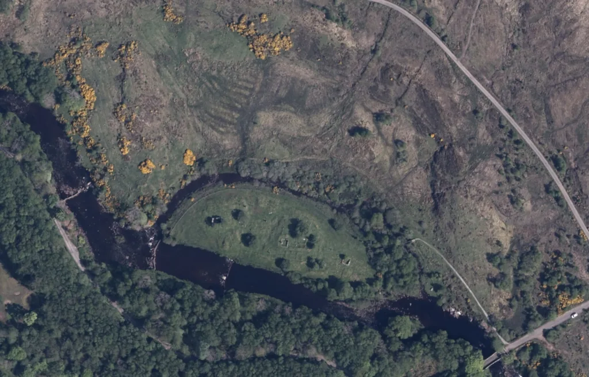
St Columba’s Isle is the small island burial ground at Skeabost in the River Snizort, near the head of Loch Snizort on the Isle of Skye. It is also recorded as Skeabost Island and Eilean Chaluim Chille. Its church remains include the site known as Snizort Cathedral.
From The Statistical Account of Scotland, edited by Sir John Sinclair, vol. 18, pp. 185–186. The series was published in 1791–99.
At about a quarter of a mile’s distance from the shore, this water forms an island of nearly an acre and a half, formerly the habitation of monks and priests, but now the burying place of many families, in this as well as the adjacent districts. In this small island are the ruins of an old large cathedral, which in all probability has once been the metropolitan church of the whole island of Sky.
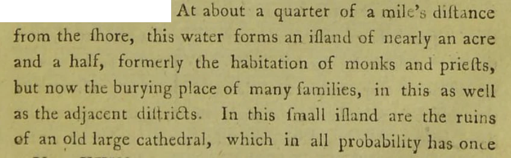
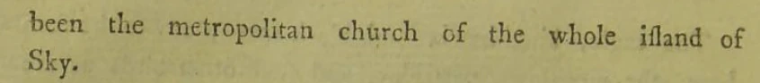
By Alexander Smith (1830-1867)
The Skyeman likes to bury his dead in islands, and this one in the stream at Skeabost is a crowded cemetery. I forded the stream, and wandered for an hour amongst the tombs and broken stones. There are traces of an ancient chapel on the island, but tradition does not even make a guess at its builder's name or the date of its erection. There are old slabs, lying sideways, with the figures of recumbent men with swords in their hands, and inscriptions — indecipherable now — carved on them. There is the grave of a Skye clergyman who, if his epitaph is to be trusted, was a burning and a shining light in his day — a gospel candle irradiating the Hebridean darkness. I never saw a churchyard so mounded, and so evidently over-crowded. Here laird, tacksman, and cotter elbow each other in death. Here no one will make way for a new-comer, or give the wall to his neighbour. And standing in the little ruined island of silence and the dead, with the river perfectly audible on either side, one could not help thinking what a picturesque sight a Highland funeral would be, creeping across the moors with wailing pipe-music, fording the river, and his bearers making room for the dead man amongst the older dead as best they could. And this sight, I am told, may be seen any week in the year. To this island all the funerals of the country-side converge. Standing there, too, one could not help thinking that this space of silence, girt by river noises, would be an eerie place by moonlight. The broken chapel, the carved slabs lying sideways, as if the dead man beneath had grown restless and turned himself, and the head-stones jutting out of the mounded soil at every variety of angle, would appal in the ink of shadow and the silver of moonbeam. In such circumstances one would hear something more in the stream as it ran past than the mere breaking of water on stones.
The map places St Columba’s Isle in the River Snizort and records the surrounding landscape at Skeabost.
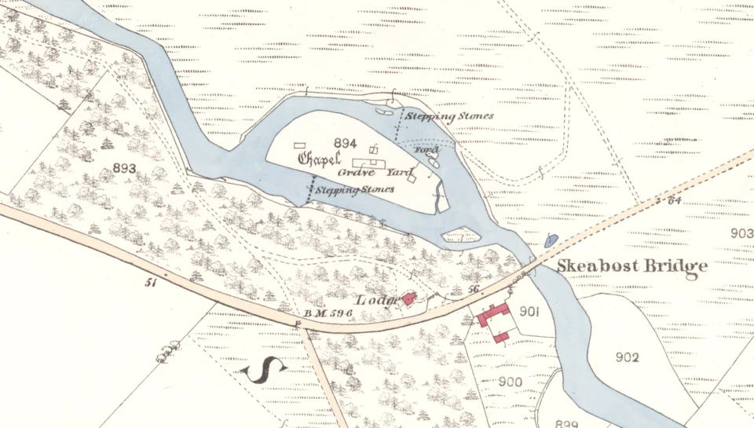
By Thomas Scott Muir
At some five or six miles out of Portree, and whilst nearing the head of Loch Snizort, you see it in the shape of a diminutive islet or holm quite close to the road.
During rainy weather access to it is not very easy or safe, and I well remember the trouble and trepidation I experienced some years ago while being taken across in a cart with the river in flood. On making the shore one is immediately struck with the intensely ecclesiastical character of the spot. From end to end the islet is covered with the remains of chapels, some of them with a bit of wall here and there, but most of them so reduced that nothing is traceable more than the ground-plan. The one most entire, though possibly not the most ancient of the group, is in all likelihood that spoken of in the Origines as dedicated to St. Columba; and as the walls are nowhere much worn down, may have been in use till up to the occupation of the "subsequent church, decayed in 1796," which stood at the head of Loch Snizort Beg. It is a very rough building, externally 21 feet in length, the side elevations somewhat broken, the east and west ones, together with their gables, nearly entire. The doorway (S.W.) is dilapidated, and the only perfect window is a rectangularly-shaped one, 22 inches high by 6 wide in the east end. Apparently the island is not fertile in sculptured slabs, the only specimens I could see being one bearing a military effigy in half-relief, lying inside the church, and another and much finer one of like kind over a grave a few paces off.
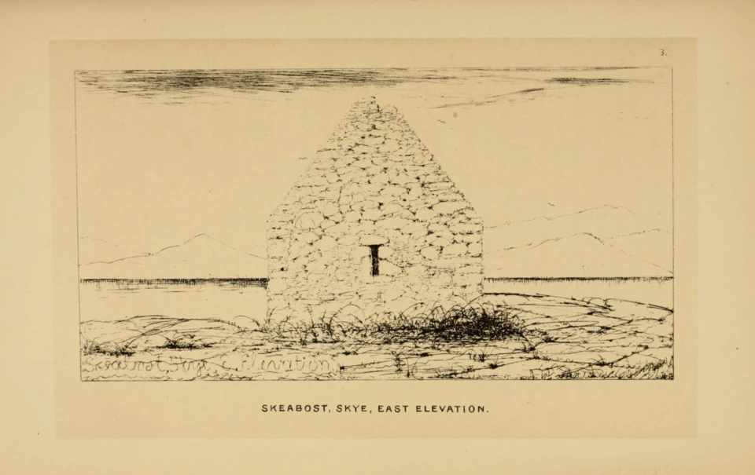
Source: Thomas Scott Muir, Ecclesiological Notes on Some of the Islands of Scotland (1885), p. 35.
By J. A. (John Arnott) MacCulloch (1868-1950)
The island is the parish burying-ground, and this ruined building served as the parish church for many centuries, devotion to St. Columba who visited the island overcoming the difficulty (very slight after all) of reaching it. Little of the building now remains; just enough to show that it was 82 feet long, and of a chancelled type, which in itself proves it to be of later date than the smaller building near by.
On this island, as well as in the churchyard at Kilmuir, are some interesting carved stones, bearing deeply incised figures of armed knights. These closely resemble the lona stones, and are usually believed to have been stolen from lona by a piratical Skyeman. This is far from unlikely, as the primitive Celt had no illusions about property. But it is just as likely that the stones may be of local origin, as Celtic art, though confined to typical forms, was not necessarily confined to one particular district. The stones are exposed to wind and weather, and the carving is being rapidly destroyed.
Source: J. A. MacCulloch, The Misty Isle of Skye: Its Scenery, Its People, Its Story (1905).
By Fred T. MacLeod
Skeabost burial-ground is situated within a stone's-throw of Skeabost Bridge post office, about 6 miles from Portree. Adjacent to it there are ruins which indicate the existence in early times of a church of considerable size and importance. The site of the burial-ground itself is upon land which, under normal conditions, is a small peninsula, but which in times of heavy floods and severe weather i.s quickly converted into an island. The absence of access in times of flood involves great self-sacrifice, when the coffins have, of necessity, to be borne by the followers through water many feet deep.
The first stone of interest I found here was a monumental slab with a full-length effigy in relief, resting in a recumbent position in a little square building, which at one time, obviously, formed part of the church. The stone was of such a size and the effigy stood out in such strong relief that it was impossible to procure a rubbing of it; and the building was so confined and dark that a satisfactory photograph could not be obtained. The sculptured figure is that of a man in armour, both hands grasping a sword of considerable size.
Just outside this little building was another monumental slab, so much broken that it was impossible to recognise anything except that it contained a similar figure of a warrior grasping a sword.
About twenty yards to the south-west was a third monument of similar design, by far the best specimen of the three. The stone was in a recumbent position, but I had it lifted on end and photographed.
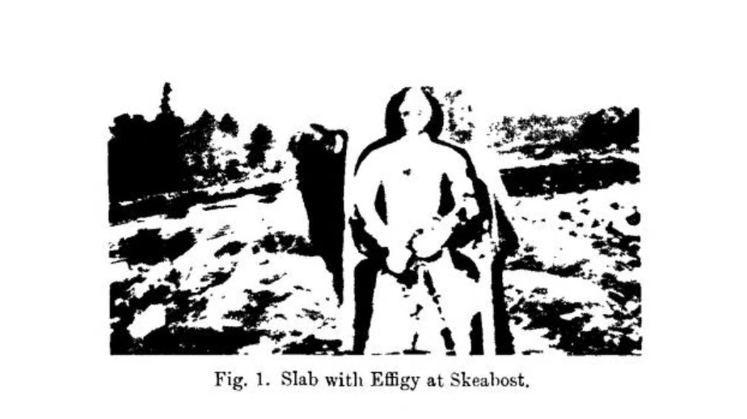
The figure of the man in armour is enclosed in a Gothic niche, and is excellently carved in the usual style of the West Highland effigies. This monument (as doubtless also the other two) was doing duty to mark a not very ancient burial, and on it there were comparatively modern initials, which, I was informed, refer to a family of MacSweens.
There is also another stone carved in a primitive and curious manner, to which an interesting tradition is attached. It is a recumbent monument in memory of a woman who was killed by a bull. The carved figure is that of the skeleton of a woman, the sex being indicated by the presence of what appears to he a "mutch" round the skull. On either side of the skeleton two hoof-marks are carved to indicate the manner of death.
Having been informed that an ancient copan-baistidh or baptismal font had been seen in this burial-ground, I made inquiries, and located the place where it lay. Until comparatively recently it was entire, but now, owing to the effect of the weather and neglect, it is gradually breaking up. It is simply a rough-hewn hollowed-out stone, with no ornamentation.
A historical folklore account, reproduced from Folklore, p. 310.
(1) A girl at Skeabost was sent to the well for water. On her way she saw a shape, which she could not describe, on a high hill. Suddenly, as she watched it, she was aware that it had disappeared from the spot and at the same moment she found it at her side. It spoke to her, but my informant had forgotten what it said. At all events, she was terrified, and, dropping her pail, she fled. But she had time to look round, and she saw the shape go into one of the ancient tombs on Skeabost island, a small islet in Skeabost River where is a very old burying ground with ancient sculptured tombs.
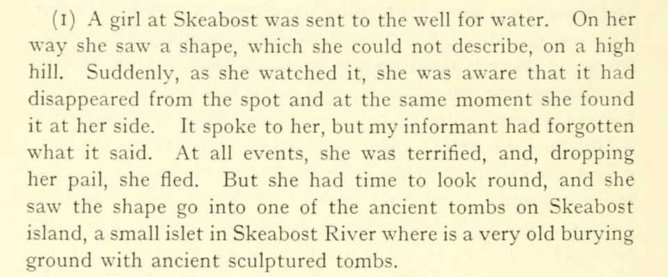
By Sarah Thomas
Sarah Thomas’s study of the island examines its medieval cathedral and its role as a seat of the bishops of Sodor from about 1387. Read Thomas’s archaeological and historical study.




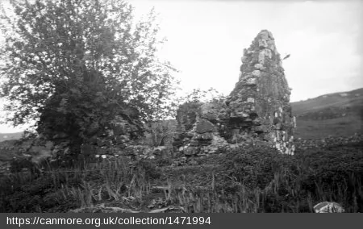
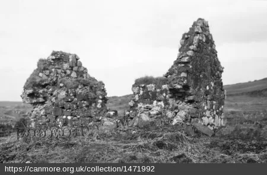
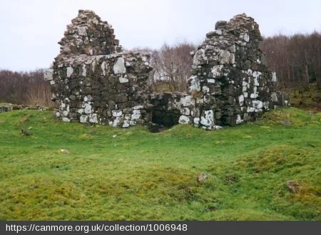
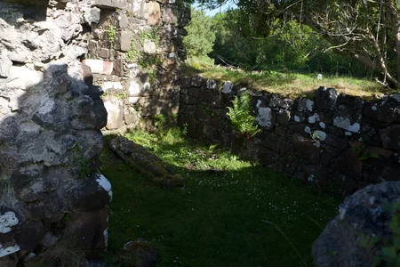
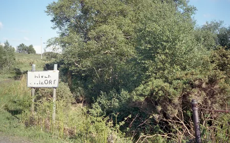
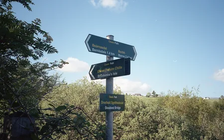
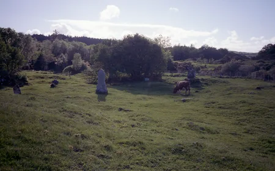
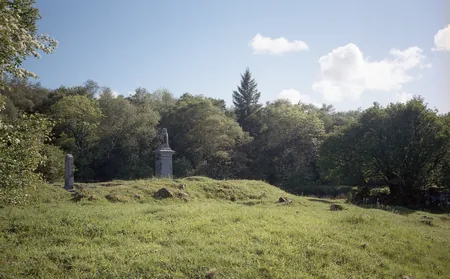
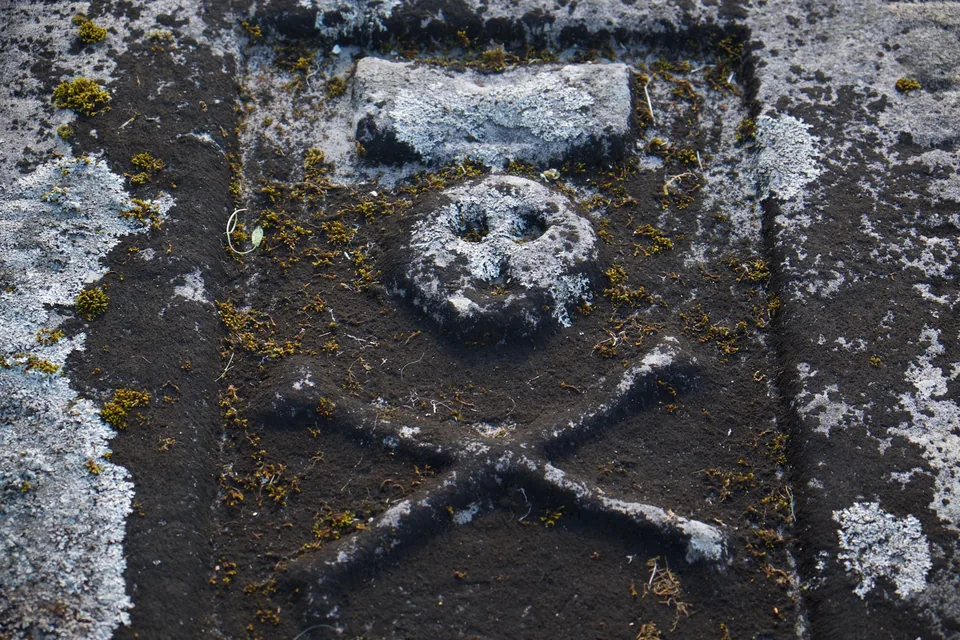
The church and other ecclesiastical remains are protected as Scheduled Monument SM947. The surviving ruins and carved grave slabs are documented in the Highland Historic Environment Record.
Collected by Rob Reinhardt: historical descriptions, old maps and images of St Columba’s Isle, alongside photographs from a visit in 2017. The collection follows the island’s ruins and grave slabs through accounts and imagery from different periods.
Archival images and maps are credited to their sources above. Other photographs © Rob Reinhardt.
Anything to add? Questions, corrections or feedback → Send an email.
Page updated .